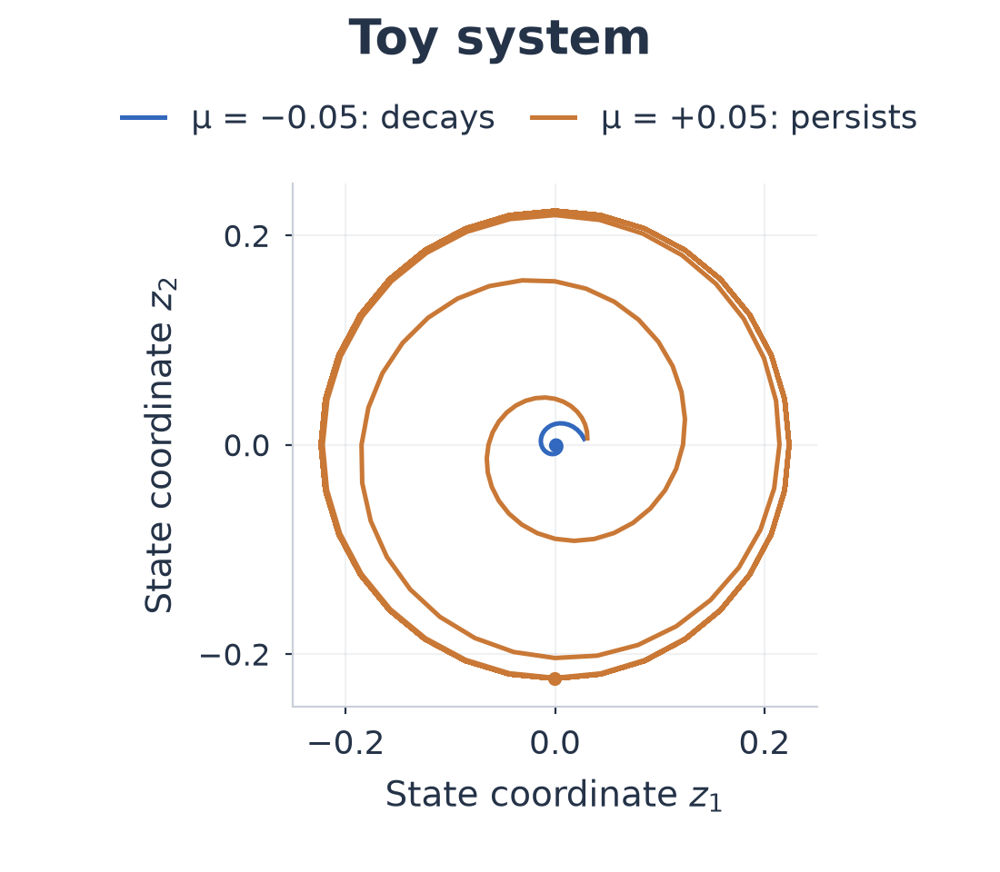
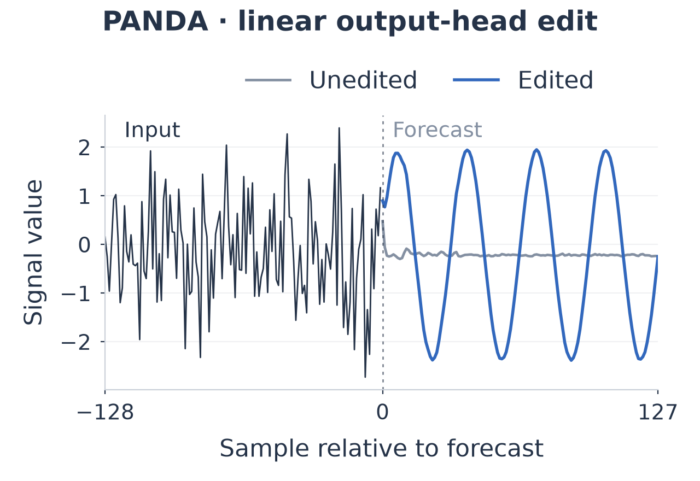

Research note · Draft · September 2026
Looking for a bifurcation inside an LLM
Wouldn’t it be interesting if a small change inside a time-series foundation model could push it through a bifurcation? I imagined a knob that could turn a fading disturbance into a sustained oscillation.
I used PANDA, a pretrained forecasting transformer. This led me toward a second question: could a small world model learn how to steer its internal activations?
A knob for dynamics
A Hopf bifurcation was the starting idea. The toy system below illustrates a related discrete transition: a parameter changes whether motion decays or persists.

In PANDA, I added a direction \(v\) to an activation \(h\), with strength \(\alpha\):

I chose the edit through the head’s pseudoinverse to add the desired waveform. I then fed predictions into the next forecast and repeated the edit. The feedback runs produced no sustained-cycle candidates.
A world model of the model
Inspired by sensorimotor world models, I compressed activations into 64 coordinates. A forward model predicted how edits changed later activations. An inverse model learned to recover the edit from that change.
A planner used this smaller model to choose edits toward a target. Each step advanced through transformer layers.
PCA planning reduced median error toward an activation target by about 94–95%. The learned representation reduced it by about 26–27%. Both struggled to produce a requested waveform. Direct optimization through PANDA reached it more closely, at greater computational cost.
Can we learn an activation space where a desired change in behavior becomes a predictable trajectory?